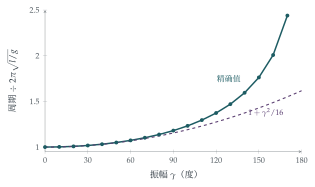

STEP III 1998，第 11 题
继续之前，请先阅读题目（原题为英文）。题目载于 STEP Support Programme 的题目资料库： step.maths.org/questions/98-s3-q11
引子
每个修读物理的学生都学过：单摆（pendulum）的周期（period）是 \(2\pi\sqrt{l/g}\)，与摆动的幅度无关。伽利略（Galileo）对此深信不疑，相传他曾在比萨大教堂以自己的脉搏为一盏摇晃的吊灯计时；摆钟之所以能够报时，靠的也正是这一点。然而这并不完全正确。这条公式源自近似式 \(\sin\theta \approx \theta\)，而摆动弧度大的单摆，所需的时间会较长。在 \(90^\circ\) 时，周期长了 \(18\%\)；若单摆从几乎倒立的位置释放，所需的时间则要多长有多长。
本题先把精确的周期写成一个积分，再求出中等摆幅下的第一个修正项。这个积分无法用初等函数求出：它是一个椭圆积分（elliptic integral），而人们如何驯服这类积分的故事，由高斯（Gauss）的算术几何平均一直延伸到椭圆曲线的理论。
动笔之前
摆锤沿半径为 \(l\) 的圆周运动。以 \(\theta\) 和 \(\dot\theta\) 表示，它的速率和高度（相对于最低点）分别是甚么？
速率是 \(l\dot\theta\)，而距最低点的高度是 \(l(1 - \cos\theta)\)。由于绳子不作功（其张力恒与运动方向垂直），能量守恒（conservation of energy）。
逐步解题
阶段 1 能量
在最大摆角 \(\gamma\) 处，摆锤瞬时静止。由能量守恒得 \[\tfrac12ml^2\dot\theta^2 + mgl(1 - \cos\theta) = mgl(1 - \cos\gamma),\] 两边除以 \(ml\)，得 \(\frac12l\dot\theta^2 = g(\cos\theta - \cos\gamma)\)。■
阶段 2 把周期写成积分
怎样用半角表示 \(\cos\theta - \cos\gamma\)？另外，由 \(\theta = 0\) 摆到 \(\theta = \gamma\) 占了周期的多少？
利用 \(\cos\theta = 1 - 2\sin^2\frac\theta2\)，可得 \(\cos\theta - \cos\gamma = 2\bigl(\sin^2\frac\gamma2 - \sin^2\frac\theta2\bigr)\)，所以 \[\dot\theta = 2\sqrt{\frac gl}\,\Bigl(\sin^2\frac\gamma2 - \sin^2\frac\theta2\Bigr)^{1/2}.\] 根据对称性，由 \(0\) 摆到 \(\gamma\) 需时四分之一个周期，所以 \[P = 4\int_0^\gamma\frac{\mathrm{d}\theta}{\dot\theta} = 2\sqrt{\frac lg}\int_0^\gamma\Bigl(\sin^2\frac\gamma2 - \sin^2\frac\theta2\Bigr)^{-1/2}\mathrm{d}\theta. \qed\]
阶段 3 消除奇点
被积函数（integrand）在 \(\theta = \gamma\) 处变成无穷大。设 \(k = \sin\frac\gamma2\)，并作代换（substitution）\(\sin\frac\theta2 = k\sin\phi\)。\(0 \leq \theta \leq \gamma\) 对应于 \(\phi\) 的甚么范围？被积函数会变成怎样？
当 \(\theta\) 由 \(0\) 变到 \(\gamma\) 时，\(\phi\) 由 \(0\) 变到 \(\frac\pi2\)。求导得 \(\frac12\cos\frac\theta2\,\mathrm{d}\theta = k\cos\phi\,\mathrm{d}\phi\)，所以 \[\mathrm{d}\theta = \frac{2k\cos\phi\,\mathrm{d}\phi}{\cos\frac\theta2} = \frac{2k\cos\phi\,\mathrm{d}\phi}{\sqrt{1 - k^2\sin^2\phi}}.\] 另一方面，\(\sin^2\frac\gamma2 - \sin^2\frac\theta2 = k^2(1 - \sin^2\phi) = k^2\cos^2\phi\)。那些棘手的因子互相抵销： \[P = 2\sqrt{\frac lg}\int_0^{\pi/2}\frac{1}{k\cos\phi}\cdot\frac{2k\cos\phi}{\sqrt{1 - k^2\sin^2\phi}}\,\mathrm{d}\phi = 4\sqrt{\frac lg}\int_0^{\pi/2}\frac{\mathrm{d}\phi}{\sqrt{1 - k^2\sin^2\phi}}.\] 由于 \(k < 1\)，新的被积函数性质十分良好。
阶段 4 第一个修正项
当 \(k\) 很小时，用二项式定理（binomial theorem）展开 \((1 - k^2\sin^2\phi)^{-1/2}\)。\(\int_0^{\pi/2}\sin^2\phi\,\mathrm{d}\phi\) 等于甚么？
准确至一阶，\((1 - k^2\sin^2\phi)^{-1/2} \approx 1 + \frac12k^2\sin^2\phi\)，而 \(\int_0^{\pi/2}\sin^2\phi\,\mathrm{d}\phi = \frac\pi4\)。所以 \[P \approx 4\sqrt{\frac lg}\Bigl(\frac\pi2 + \frac{k^2}{2}\cdot\frac\pi4\Bigr) = 2\pi\sqrt{\frac lg}\Bigl(1 + \frac{k^2}{4}\Bigr).\] 当 \(\gamma\) 很小时，\(k = \sin\frac\gamma2 \approx \frac\gamma2\)，故 \(k^2 \approx \frac{\gamma^2}{4}\)，于是 \[P \approx 2\pi\sqrt{\frac lg}\Bigl(1 + \frac{\gamma^2}{16}\Bigr). \qed\] 摆幅为 \(20^\circ\)（\(\gamma \approx 0.35\)）时，修正量不足 \(1\%\)；在 \(60^\circ\) 时则约为 \(7\%\)（图 11.3.1）。

回顾
能量给出首次积分（first integral）。二阶方程变成了一阶方程，而周期则变成了一个积分。
代换驯服奇点（singularity）。被积函数在转向点处趋向无穷大；代换 \(\sin\frac\theta2 = k\sin\phi\) 消除了这个问题。
先求精确，再作近似。我们先求出精确的公式，然后将它展开，这样同时可以知道近似的效果有多好。
背后的数学
椭圆积分
积分 \[K(k) = \int_0^{\pi/2}\frac{\mathrm{d}\phi}{\sqrt{1 - k^2\sin^2\phi}}\] 称为第一类完全椭圆积分（complete elliptic integral of the first kind），这个名称的由来，是因为与它相近的另一个积分给出椭圆的周界。精确的周期是 \(P = 4\sqrt{l/g}\,K\bigl(\sin\frac\gamma2\bigr)\)。把被积函数完全展开，再利用 第 4.4 节 中的沃利斯积分（Wallis integrals）\(\int_0^{\pi/2}\sin^{2n}\phi\,\mathrm{d}\phi\) 逐项积分，便得 \[P = 2\pi\sqrt{\frac lg}\Bigl(1 + \bigl(\tfrac12\bigr)^2k^2 + \bigl(\tfrac{1\cdot3}{2\cdot4}\bigr)^2k^4 + \bigl(\tfrac{1\cdot3\cdot5}{2\cdot4\cdot6}\bigr)^2k^6 + \cdots\Bigr).\] \(K(k)\) 无法以有限个熟悉的函数组合而成；它是一个名副其实的新函数。
高斯的非凡公式
计算 \(K\) 有一个好得多的方法。你在 第 2.6 节 已见过算术几何平均（arithmetic–geometric mean）：由 \(a\) 和 \(b\) 开始，反复以它们的算术平均和几何平均取代它们。高斯在 1799 年发现 \[K(k) = \frac{\pi}{2\,\mathrm{AGM}\bigl(1, \sqrt{1 - k^2}\bigr)},\] 所以振幅为 \(\gamma\) 的单摆，其周期恰好是 \[P = \frac{2\pi\sqrt{l/g}}{\mathrm{AGM}\bigl(1, \cos\frac\gamma2\bigr)}.\] AGM 收敛得极快：摆幅在大约 \(160^\circ\) 以内时，只需三四步便可求得准确至十位有效数字的周期，图 11.3.1 中的数值正是这样算出来的。接近 \(180^\circ\) 时，两个初始值 \(1\) 和 \(\cos\frac\gamma2\) 相距甚远，需要多走一两步，但即使在 \(179^\circ\)，五步也已足够。高斯在日记中写道，这项发现“开辟了一个全新的分析领域”，而他说得一点不错：把椭圆积分反演，引领阿贝尔（Abel）和雅可比（Jacobi）发现了椭圆函数（elliptic functions），而椭圆函数又引出了椭圆曲线（elliptic curves）。椭圆曲线如今是数论的核心（它们正是证明费马最后定理（Fermat’s Last Theorem）的关键），也是保障互联网安全的密码学的核心。
伽利略大约在 1602 年提出，单摆的周期与振幅无关；对于他所研究的小幅摆动，这是个很好的近似。惠更斯（Christiaan Huygens）意识到这并不精确，并在 1659 年找到了一条曲线，沿着它摆动时周期确实与振幅无关：那就是摆线（cycloid），即 第 11.4 节 的主题。他由 1656 年起制造的摆钟，把计时的误差由每天约一刻钟减至约十五秒。航海天文钟（marine chronometer）解决了在海上测定经度的难题，它后来完全舍弃了单摆，但直至 1920 年代，摆钟仍然是世上最准确的计时器。
思维技巧
当一个量由无法求值的积分给出时，先把它变换成性质良好的形式，然后展开被积函数并逐项积分。
物理学家正是这样为理想化的结果求出修正项的，这也是微扰理论（perturbation theory）的起点。到了大学，你会学到逐项积分在甚么情况下才成立（一致收敛（uniform convergence）），以及怎样估计截断级数所造成的误差。
延伸练习
系着的质点。试做 STEP III 2015，第 9 题：这个振子即使在小幅振动时，周期也取决于振幅。为甚么它会这样，而单摆却不会？
下一项。把二项式展开多取一项，证明 \(P \approx 2\pi\sqrt{\frac lg}\bigl(1 + \frac{\gamma^2}{16} + \frac{11\gamma^4}{3072}\bigr)\)。
徒手计算 AGM。用三步 AGM 估算振幅为 \(90^\circ\) 的单摆的周期，并与图中的数值 \(1.1803\) 比较。
时钟。一座摆钟经调校后，在振幅为 \(4^\circ\) 时走时完全准确。若它的振幅增至 \(5^\circ\)，它每天会慢多少秒？
延伸阅读
David Morin, Introduction to Classical Mechanics（Cambridge University Press），第 4 章，当中讨论了大振幅的单摆。
Jonathan Borwein & Peter Borwein, Pi and the AGM（Wiley）。高斯的发现及其应用，包括计算 \(\pi\) 的最快方法。
Dava Sobel, Longitude（Fourth Estate）。海上计时的故事，讲述单摆以外的发展。